한국사능력검정시험-심화 (2011-05-14 기출문제)
1. 밑줄 그은‘흥수 아이’가 살던 시대의 생활 모습으로 옳은 것은? [1점]
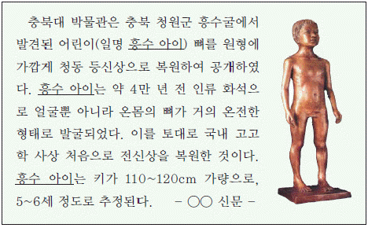
- 가락바퀴, 뼈바늘을 사용하였다.
- 무리를 지어 이동 생활을 하였다.
- 반달 돌칼로 곡식의 이삭을 잘랐다.
- 사람이 죽으면 독에 넣어 매장하였다.
- 토테미즘, 샤머니즘과 같은 원시 신앙을 믿었다.
(정답률: 69%)

2. 다음 대화에서 논쟁의 대상이 되고 있는 나라에 대한 설명으로 옳은 것은? [2점]
- 가족 공동 묘의 풍습이 있었다.
- 무천이라는 제천 행사가 있었다.
- 데릴사위제의 결혼 풍습이 있었다.
- 가(加)들이 다스리는 사출도가 있었다.
- 천군이 제사 의식을 주관하는 소도가 있었다.
(정답률: 74%)
3. 다음 법을 시행한 나라의 세력 범위를 짐작할 수 있는 유물·유적으로 옳은 것을 <보기>에서 고른 것은? [1점]
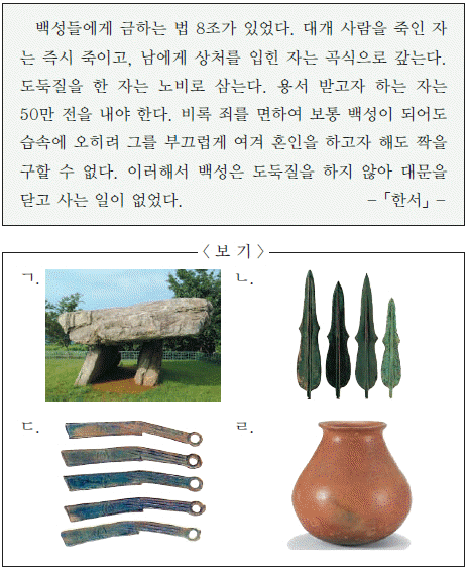
- ㄱ, ㄴ
- ㄱ, ㄷ
- ㄴ, ㄷ
- ㄴ, ㄹ
- ㄷ, ㄹ
(정답률: 75%)
4. 교사의 질문에 대한 대답으로 옳지 않은 것은? [2점]
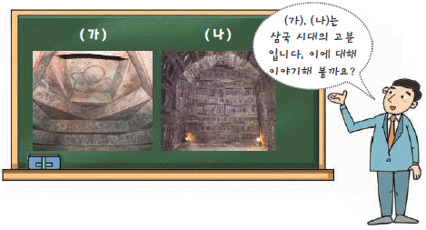
- (가)의 양식은 발해로 계승되었어요.
- (가)는 부장품이 도굴되기 쉬운 양식이어요.
- (나)는 중국 남조와의 교류를 보여 주고 있어요.
- (나)에서는 무덤의 주인공을 알 수 있는 지석이 나왔어요.
- (가), (나)는 모줄임 천장 구조를 하고 있어요.
(정답률: 62%)
5. 다음 문화재에 대한 설명으로 옳은 것은? [2점]
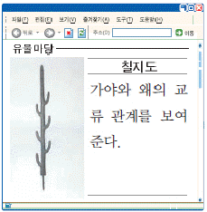
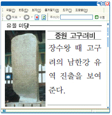
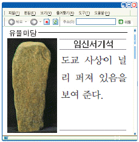
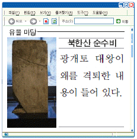
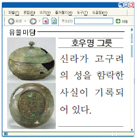
(정답률: 69%)
6. 다음은 어느 나라의 외교 활동에 관한 자료이다. 이 나라에 대한 설명으로 옳지 않은 것은? [2점]
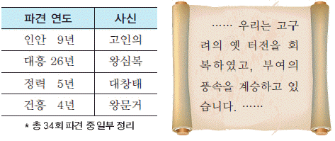
- 중국 양나라에 사신을 파견하였다.
- 신라도를 개통하여 신라와 교류하였다.
- 자기, 말, 모피 등을 주변국에 수출하였다.
- 장문휴로 하여금 덩저우를 공격하게 하였다.
- 천손 의식을 표방하고 독자적인 연호를 사용하였다.
(정답률: 56%)
7. 다음 편지를 받는 인물에 관한 탐구 활동으로 옳지 않은 것은? [2점]
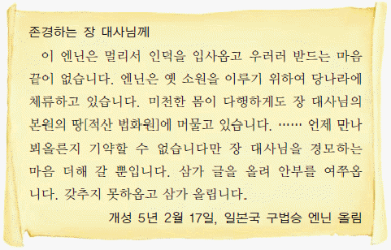
- 신라인의 해외 진출을 알아본다.
- 신라 말의 정치 상황을 분석한다.
- 해상 세력의 성장 과정을 파악한다.
- 고대 동아시아의 항해로를 살펴본다.
- 고려 건국 과정에서의 활약상을 조사한다.
(정답률: 64%)
8. 가야 연맹의 어느 나라와 관련된 행사 포스터이다. 이 나라에 대한 설명으로 옳은 것은? [3점]
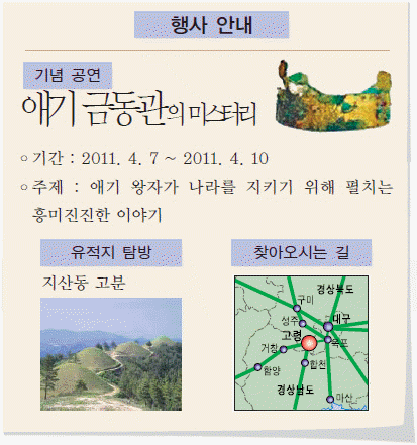
- 중앙 집권적인 국가로 발전하였다.
- 1세기 무렵 김수로에 의해 건국되었다.
- 낙랑, 대방, 왜와 활발하게 교역하였다.
- 고구려 광개토 대왕의 공격으로 쇠퇴하였다.
- 5세기 후반에는 소백산맥 서쪽까지 진출하였다.
(정답률: 27%)
9. 밑줄 그은 (가)`~`(다)에 대한 설명으로 옳은 것을 <보기>에서 고른 것은? [2점]
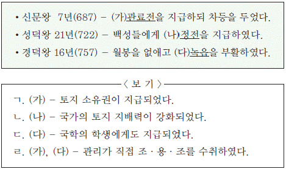
- ㄱ, ㄴ
- ㄱ, ㄷ
- ㄴ, ㄷ
- ㄴ, ㄹ
- ㄷ, ㄹ
(정답률: 28%)
10. 다음 기사의 (가)에 해당하는 문화유산으로 옳은 것은? [2점]
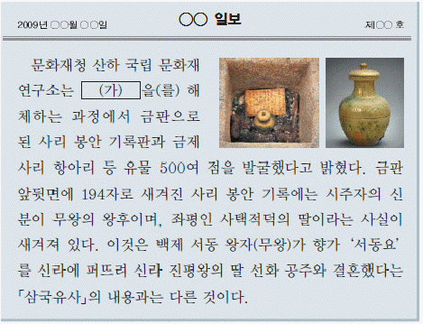
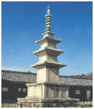
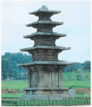
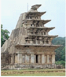
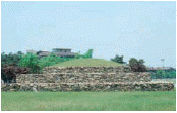
(정답률: 45%)
11. 다음 자료와 관련된 불교 사상에 대한 탐구 활동으로 가장 적절한 것은? [3점]
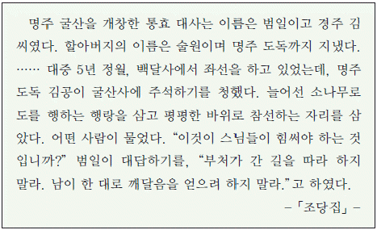
- 화엄 사상의 성립 배경을 분석한다.
- 승탑이 유행하게 된 배경을 조사한다.
- 정토 신앙 운동이 전개된 과정을 알아본다.
- 신라에서 불교식 왕명이 사용된 사례를 살펴본다.
- 사원에 칠성각과 산신각이 건립된 이유를 조사한다.
(정답률: 39%)
12. 다음 건의를 받아들인 왕이 실시한 정책으로 옳은 것은? [2점]
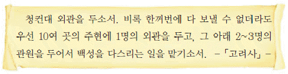
- 서경을 중시하여 천도를 추진하였다.
- 5도 양계의 지방 제도를 확립하였다.
- 국자감을 설치하여 유학 교육 진흥에 힘썼다.
- 노비안검법을 실시하여 호족 세력을 억제하였다.
- 연등회, 팔관회 등 불교 행사를 적극 장려하였다.
(정답률: 30%)
13. 다음은 고려의 중앙 관제표이다. (가)`~`(마)에 대한 설명으로 옳은 것은? [2점]
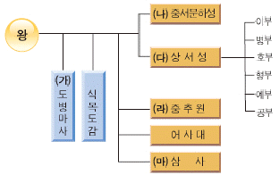
- (가) - 어사대 관리와 중서문하성의 낭사로 구성되었다.
- (나) - 국가의 중대사를 결정하는 귀족 합의 기구였다.
- (다) - 장관인 문하시중이 국정을 총괄하였다.
- (라) - 서경·봉박·간쟁의 기능을 수행하였다.
- (마) - 곡식의 출납과 회계를 담당하였다.
(정답률: 57%)
14. (가) ~(마)는 대몽 항쟁이 이루어진 지역이다. 이와 관련된 설명으로 옳지 않은 것은? [2점]
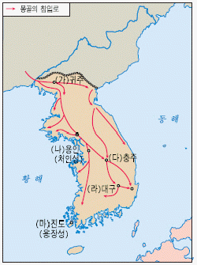
- (가) - 박서의 부대가 몽골군을 물리쳤다.
- (나) - 김윤후가 몽골 장수 살리타를 사살하였다.
- (다) - 노군과 잡류가 몽골군과 싸워 이겼다.
- (라) - 황룡사 9층 목탑이 불타 버렸다.
- (마) - 배중손이 삼별초의 항쟁을 지휘하였다.
(정답률: 50%)
15. 다음 문화유산이 제작된 시대의 경제생활에 대한 설명으로 옳은 것을 보기에서 고른 것은? [2점]
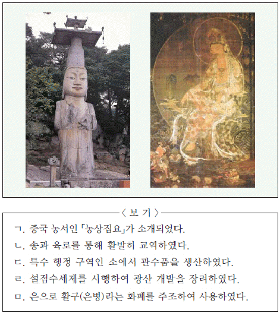
- ㄱ, ㄴ, ㄷ
- ㄱ, ㄴ, ㄹ
- ㄱ, ㄷ, ㅁ
- ㄴ, ㄷ, ㄹ
- ㄷ, ㄹ, ㅁ
(정답률: 62%)
16. 다음 소송이 이루어진 시대의 가족 제도에 대한 설명으로 옳은 것을 <보기>에서 고른 것은? [1점]
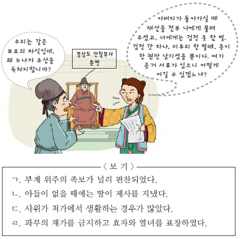
- ㄱ, ㄴ
- ㄱ, ㄷ
- ㄴ, ㄷ
- ㄴ, ㄹ
- ㄷ, ㄹ
(정답률: 70%)
17. (가), (나)를 주장한 인물과 관련된 설명으로 옳은 것은? [3점]
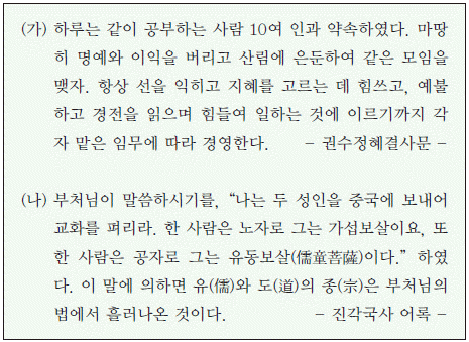
- (가)는 교관겸수를 바탕으로 천태종을 창시하였다.
- (가)는 아미타 신앙을 내세워 불교의 대중화에 힘썼다.
- (나)는 백련사를 중심으로 신앙 결사 운동을 전개하였다.
- (나)는 유·불 일치설을 내세워 성리학 수용의 토대를 마련하였다.
- (가), (나)는 왕실과 문벌 귀족의 후원을 받았다.
(정답률: 55%)
18. (가), (나) 정치 제도에 대한 설명으로 옳은 것을 <보기>에서 고른 것은? [1점]
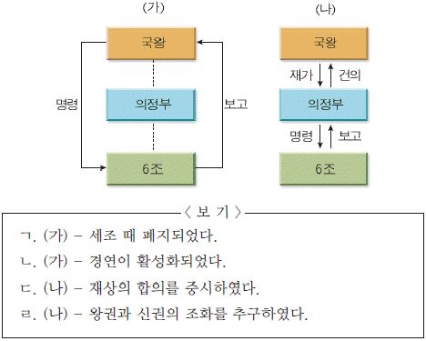
- ㄱ, ㄴ
- ㄱ, ㄷ
- ㄴ, ㄷ
- ㄴ, ㄹ
- ㄷ, ㄹ
(정답률: 64%)
19. 다음 기구가 처음 만들어진 시기의 과학 기술에 대한 설명으로 옳지 않은 것은? [2점]
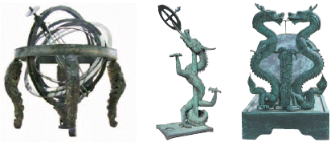
- 갑인자를 주조하여 인쇄술을 크게 향상시켰다.
- 신기전 등의 무기를 제작하여 국방력을 강화하였다.
- 한양을 기준으로 한 역법서인「칠정산」을 편찬하였다.
- 「농가집성」을 편찬하여 벼농사 중심의 농법을 소개하였다.
- 우리 풍토에 알맞는 약재와 치료법을 정리한「향약집성방」을 편찬하였다.
(정답률: 45%)
20. 다음과 같은 평가를 받은 인물에 대한 설명으로 옳은 것은? [2점]
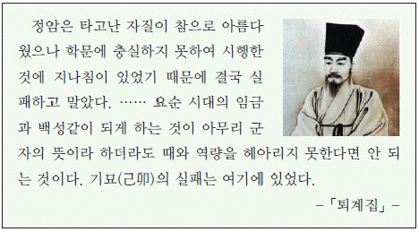
- 최초의 서원인 백운동 서원을 설립하였다.
- 해주 향약을 시행하여 향촌 교화에 힘썼다.
- 조의제문을 지어 사화의 빌미를 제공하였다.
- 「소학」보급을 통해 유교 윤리를 확산시키려 하였다.
- 유교 경전의 독자적 해석을 시도하여 사문난적으로 몰렸다.
(정답률: 35%)
21. (가) 인물이 활동한 시기의 모습으로 옳은 것은? [2점]
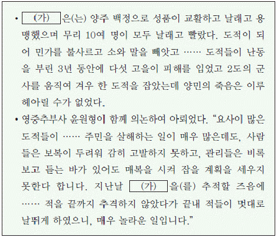
- 감자를 구워 먹는 아이
- 장죽으로 담배를 피우는 노인
- 방납의 폐단을 지적하는 관리
- 덕대에게 고용되어 일하는 광부
- 돈으로 소작료를 납부하는 농민
(정답률: 53%)
22. 다음 자료에 해당되는 시기의 모습으로 적절하지 않은 것은? [2점]
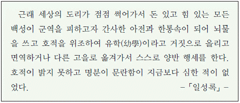
- 친영 제도가 일반화되었다.
- 납속이 행해지고 공명첩이 남발되었다.
- 서얼들이 규장각 검서관에 등용되었다.
- 향도가 대규모 불교 행사를 주도하였다.
- 중인이 시사를 조직하여 문예 활동을 하였다.
(정답률: 48%)
23. (가), (나)를 주장한 학자에 대한 설명으로 옳지 않은 것은? [2점]
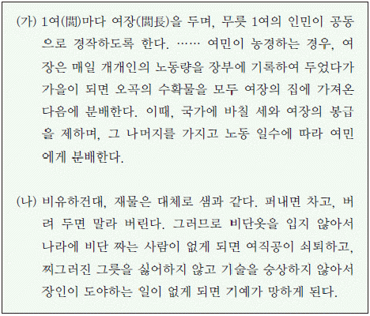
- (가) - 일종의 공동 농장 제도를 주장하였다.
- (가) - 권력은 백성들의 합의에 의해 나온다고 하였다.
- (나) - 19세기 후반 개화 사상에 영향을 주었다.
- (나) - 혼천의를 제작하고 지전설을 주장하였다.
- (가), (나) - 기술의 혁신을 통해 현실 문제를 해결하고자 하였다.
(정답률: 44%)
24. (가), (나)에 대한 설명으로 옳은 것은? [1점]
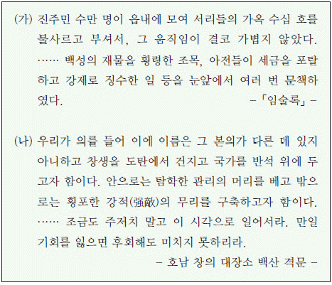
- (가) - 신분 해방을 주장하였다.
- (가) - 백낙신의 학정이 원인이 되었다.
- (나) - 삼정이정청 설치의 계기가 되었다.
- (나) - 지역민에 대한 차별에 항거해 일어났다.
- (가), (나) - 반봉건, 반외세를 주장하였다.
(정답률: 42%)
25. 다음 건축물을 건립한 시기순으로 바르게 나열한 것은? [3점]
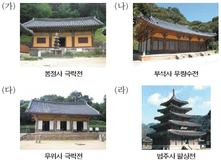
- (가) - (나) - (다) - (라)
- (가) - (다) - (나) - (라)
- (나) - (가) - (다) - (라)
- (나) - (다) - (라) - (가)
- (라) - (가) - (나) - (다)
(정답률: 30%)
26. 다음 낱말 퀴즈에서 (가)`~`(마)에 해당하는 설명으로 옳은 것은? [2점]
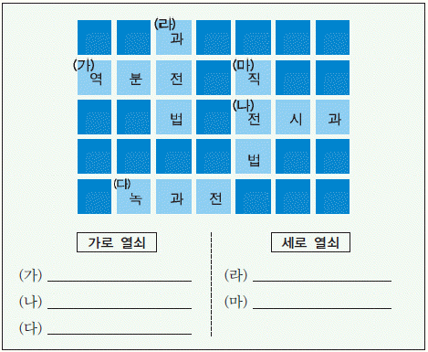
- (가) - 관품을 기준으로 관리들에게 분배하였다.
- (나) - 국가에서 조를 거두어 관리에게 지급하였다.
- (다) - 녹봉의 부족분을 보충하기 위해 지급하였다.
- (라) - 현직 관료에게만 수조권을 지급하였다.
- (마) - 수신전, 휼양전은 세습되었다.
(정답률: 37%)
27. 다음의 경제 상황이 전개된 시기의 예술 작품을 <보기>에서 고른 것은? [1점]
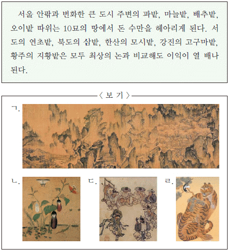
- ㄱ, ㄴ
- ㄱ, ㄷ
- ㄴ, ㄷ
- ㄴ, ㄹ
- ㄷ, ㄹ
(정답률: 56%)
28. 다음 보고서가 작성된 무렵의 사회 상황을 설명한 것으로 옳지 않은 것은? [3점]
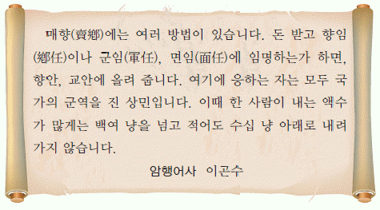
- 신향과 구향의 대립으로 향전이 발생하였다.
- 비기·도참 등을 이용한 예언 사상이 유행하였다.
- 천주교를 사교(邪敎)로 규정하는 금령이 내려졌다.
- 수령권의 강화로 향리의 자의적 농민 수탈이 약화되었다.
- 향회는 수령이 세금을 부과할 때 자문하는 기구로 변질되었다.
(정답률: 41%)
29. 밑줄 그은‘이들’과 관련된 설명으로 옳은 것을 <보기>에서 고른 것은? [2점]
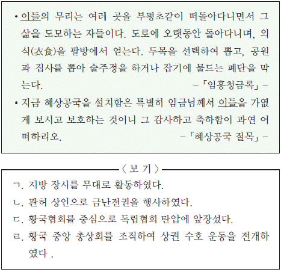
- ㄱ, ㄴ
- ㄱ, ㄷ
- ㄴ, ㄷ
- ㄴ, ㄹ
- ㄷ, ㄹ
(정답률: 35%)
30. 다음은 역사 탐구반이 수행할 탐구 활동이다. (가)~(마)에 들어갈 내용으로 적절하지 않은 것은? [2점]
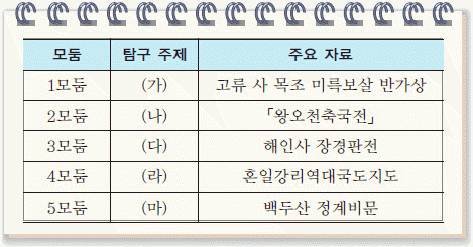
- (가) - 삼국과 일본의 문화 교류
- (나) - 신라 승려들의 구법 활동
- (다) - 조선 전기 건축술의 과학성
- (라) - 조선 후기 서양 지도의 영향
- (마) - 간도 지역의 영유권 분쟁
(정답률: 45%)
31. (가)에 대한 설명으로 옳은 것을 <보기>에서 고른 것은? [2점]
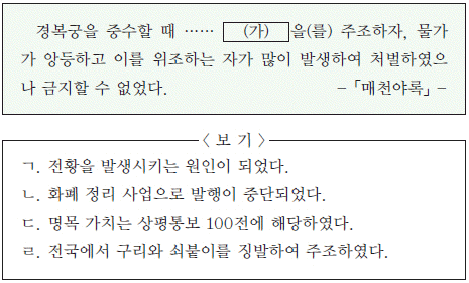
- ㄱ, ㄴ
- ㄱ, ㄷ
- ㄴ, ㄷ
- ㄴ, ㄹ
- ㄷ, ㄹ
(정답률: 30%)
32. 다음 자료와 관련된 개혁 운동에 대한 설명으로 옳은 것을 <보기>에서 고른 것은? [1점]
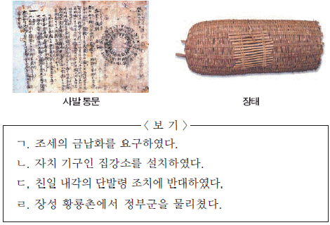
- ㄱ, ㄴ
- ㄱ, ㄷ
- ㄴ, ㄷ
- ㄴ, ㄹ
- ㄷ, ㄹ
(정답률: 56%)
33. 다음은 고종이 어느 나라에 파견한 사절단의 사진이다. 이에 대한 대화 내용으로 옳지 않은 것은? [3점]
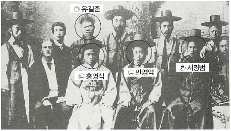
- (ㄱ)은 조사 시찰단의 일원으로 일본에 파견되었어.
- (ㄴ)은 박문국 책임자로 한성순보를 발간했어.
- (ㄷ)은 갑신정변 때 수구파로 몰려 부상을 당했어.
- (ㄹ)은 갑오개혁 시기 김홍집 내각에 참여했어.
- 조·미 수호 통상 조약 체결 이후 파견된 외교 사절이야.
(정답률: 25%)
34. 교사의 질문에 대해 바르게 대답한 학생을 <보기>에서 고른 것은? [3점]
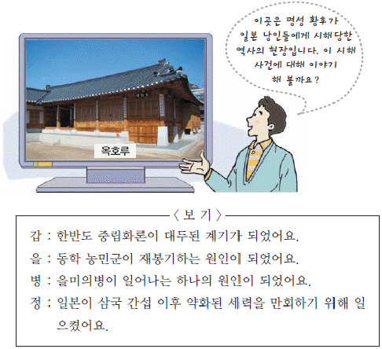
- 갑, 을
- 갑, 정
- 을, 병
- 을, 정
- 병, 정
(정답률: 60%)
35. (가)에 대한 설명으로 적절하지 않은 것은? [3점]
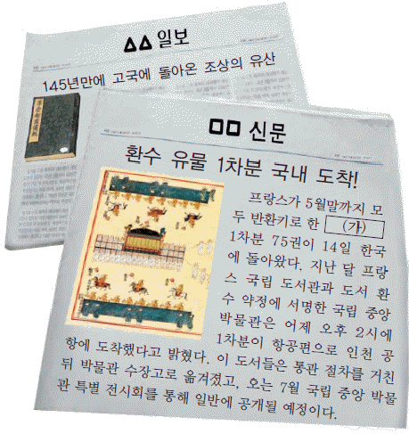
- 주로 왕실 어람용으로 제작되었다.
- 소유권이 한국으로 영구 반환되었다.
- 병인양요 때 다른 문화재와 함께 약탈되었다.
- 정조 때 강화 행궁에 건립한 건물에 보관되어 있었다.
- 김영삼 정부 때 고속 철도 협상 과정에서 1권을 돌려받았다.
(정답률: 50%)
36. (가), (나)와 관련된 단체에 대한 설명으로 옳은 것은? [1점]
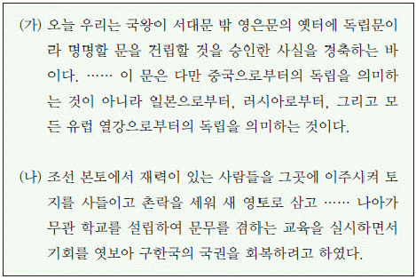
- (가)는 민중이 주도하는 개혁을 추진하였다.
- (가)는 (나)의 영향으로 조직되어 활동하였다.
- (나)는 실력 양성과 무장 투쟁을 함께 준비하였다.
- (나)는 고종 황제의 퇴위 반대 운동을 주도하였다.
- (가), (나)는 공화 정체의 국가를 건설하고자 하였다.
(정답률: 57%)
37. 다음 법을 반포한 정부의 정책으로 옳지 않은 것은? [1점]
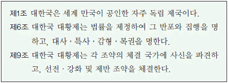
- 입헌 군주제의 통치 체제를 지향하였다.
- 양전 사업을 실시하여 지계를 발급하였다.
- 간도 관리사를 파견하여 교민을 보호하였다.
- 각종 실업 학교와 기술 교육 기관을 설립하였다.
- 울릉도를 군으로 승격시켜 독도까지 관할하게 하였다.
(정답률: 40%)
38. 다음 자료에 나타난 시기의 사회 모습을 담은 사진으로 가장 적절한 것은? [1점]
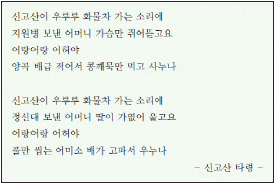
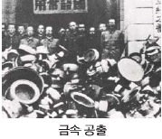
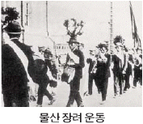
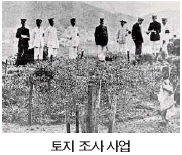
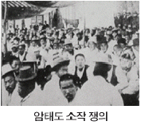
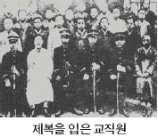
(정답률: 68%)
39. 1909년에 (가)∼(마)의 건물 앞에서 나눈 대화의 내용으로 적절하지 않은 것은? [2점]
- (가) - 이 호텔을 세운 사람은 독일 여성이래.
- (나) - 저기서‘아리랑’이라는 영화를 상영하고 있어.
- (다) - 이 학교에서는 선교사가 학생들을 가르쳐.
- (라) - 이곳에서는 서양 의사들이 환자를 치료한대.
- (마) - 여기에는 프랑스 신부님이 계신대.
(정답률: 43%)
40. 어느 도시에 대한 인터넷 검색 결과이다. (가)에 들어갈 내용으로 적절한 것은? [2점]
- 서울과 연결된 철도가 최초로 부설되었다.
- 6·25 전쟁 중 대한민국의 임시 수도였다.
- 일제 강점기에 지역 노동자의 총파업이 일어났다.
- 호남 지방의 쌀이 일본으로 수출되는 중심 항구였다.
- 3·15 부정 선거에 항의하는 대규모 시위가 일어났다.
(정답률: 47%)
41. 다음 4부작 가상 다큐멘터리에 들어갈 장면으로 옳은 것만을 <보기>에서 모두 고른 것은? [2점]
- ㄱ, ㄴ
- ㄷ, ㄹ
- ㄱ, ㄴ, ㄷ
- ㄱ, ㄴ, ㄹ
- ㄴ, ㄷ, ㄹ
(정답률: 52%)
42. (가)를 시행한 목적으로 가장 적절한 것은? [2점]
- 지주들을 산업 자본가로 전환시키려 하였다.
- 일본 국내의 식량 문제를 해결하고자 하였다.
- 식민지 통치의 재정 기반을 확대하고자 하였다.
- 공업용 원료를 원활히 수급하기 위해 시행하였다.
- 소작 관계를 법제화하여 농촌 사회를 안정시키려 하였다.
(정답률: 53%)
43. 다음은 일제가 제정한 법령의 일부이다. (가), (나)에 대한 설명으로 옳은 것은? [3점]
- (가)는 문화 통치 시기에 폐지되었다.
- (가)는 사상 전향을 강요하기 위해 제정되었다.
- (나)는 정식 재판 없이 즉결 처분이 가능하였다.
- (나)는 3·1 운동 참여자를 처벌하기 위해 제정되었다.
- (가), (나)는 한국인에게만 적용되었다.
(정답률: 29%)
44. (가) 단체에 대한 설명으로 옳은 것은? [2점]
- 6·10 만세 운동을 주도하였다.
- 비밀 지하 조직으로 무장 투쟁을 준비하였다.
- 전국 각 군과 해외까지 지회 조직을 확장하였다.
- 농민과 노동자 단체의 연합 조직으로 결성되었다.
- 의열단, 한국 독립당 등의 단체들이 모여 결성하였다.
(정답률: 23%)
45. 다음 법령과 관련된 설명으로 옳지 않은 것은? [2점]
- 미군정기에 제정되어 시행되었다.
- 전통적인 지주 소작 관계가 붕괴되었다.
- 유상 매입·유상 분배의 형태로 진행되었다.
- 법령의 시행 후 자작 농지의 비율이 늘어났다.
- 토지 대금으로 지주들에게 지가 증권을 교부하였다.
(정답률: 38%)
46. 다음은 대한민국 헌법의 개정 내용을 정리한 표이다. (가)∼(마)에 대한 설명으로 옳지 않은 것은? [2점]
- (가) - 대통령 직선제를 채택하였다.
- (나) - 4·19 혁명 직후 과도 정부 시기에 추진하였다.
- (다) - 7·4 남북 공동 성명을 계기로 이루어졌다.
- (라) - 통일 주체 국민 회의에서 대통령을 선출하였다.
- (마) - 6월 민주 항쟁의 결과로 이루어졌다.
(정답률: 51%)
47. (가), (나)는 우리 민족의 문제를 논의한 국제 회의의 결정사항이다. 이에 대한 설명으로 옳은 것을 <보기>에서 고른 것은? [2점]
- ㄱ, ㄴ
- ㄱ, ㄷ
- ㄴ, ㄷ
- ㄴ, ㄹ
- ㄷ, ㄹ
(정답률: 61%)
48. 다음 우표들을 발행한 정부 하에서 일어난 사실로 옳은 것은? [2점]
- 광주 대단지 사건이 일어났다.
- 우루과이 라운드가 체결되었다.
- 4·13 호헌 조치를 선언하였다.
- 3저 호황으로 수출이 크게 늘어났다.
- 미국의 원조에 힘입어 삼백 산업이 발달하였다.
(정답률: 31%)
49. (가), (나)는 경제 위기를 극복하기 위한 운동이다. 이에 대한 설명으로 옳은 것만을 <보기>에서 모두 고른 것은? [2점]
- ㄱ, ㄴ
- ㄱ, ㄷ
- ㄱ, ㄴ, ㄷ
- ㄱ, ㄷ, ㄹ
- ㄴ, ㄷ, ㄹ
(정답률: 58%)
50. 다음 선언을 발표한 정부의 정책으로 옳은 것은? [3점]
- 남북 학생 회담을 추진하였다.
- 선건설 후통일론을 제시하였다.
- 남북 철도 연결 사업을 시행하였다.
- 북진 통일을 기본 정책으로 삼았다.
- 민족 화합 민주 통일 방안을 제시하였다.
(정답률: 32%)